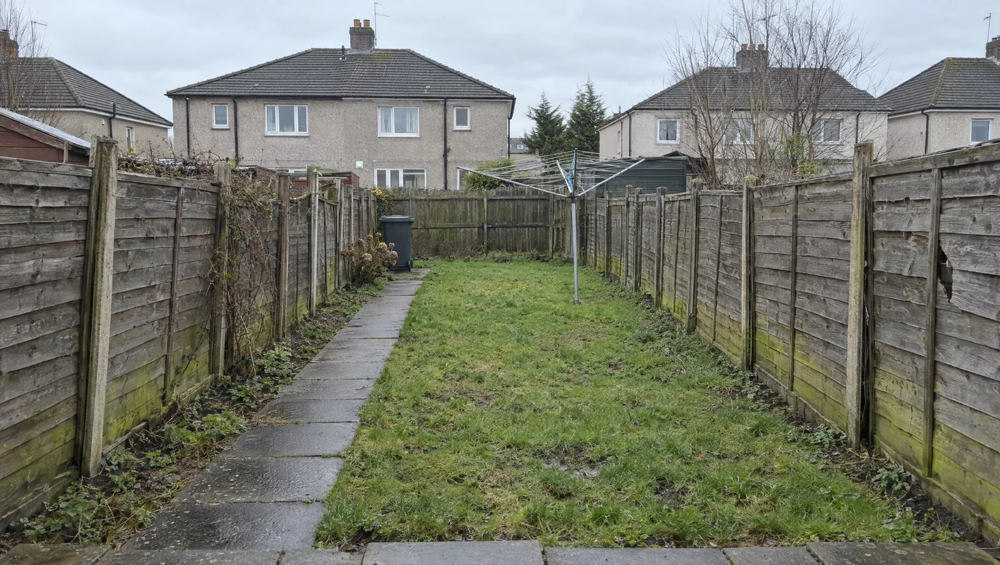
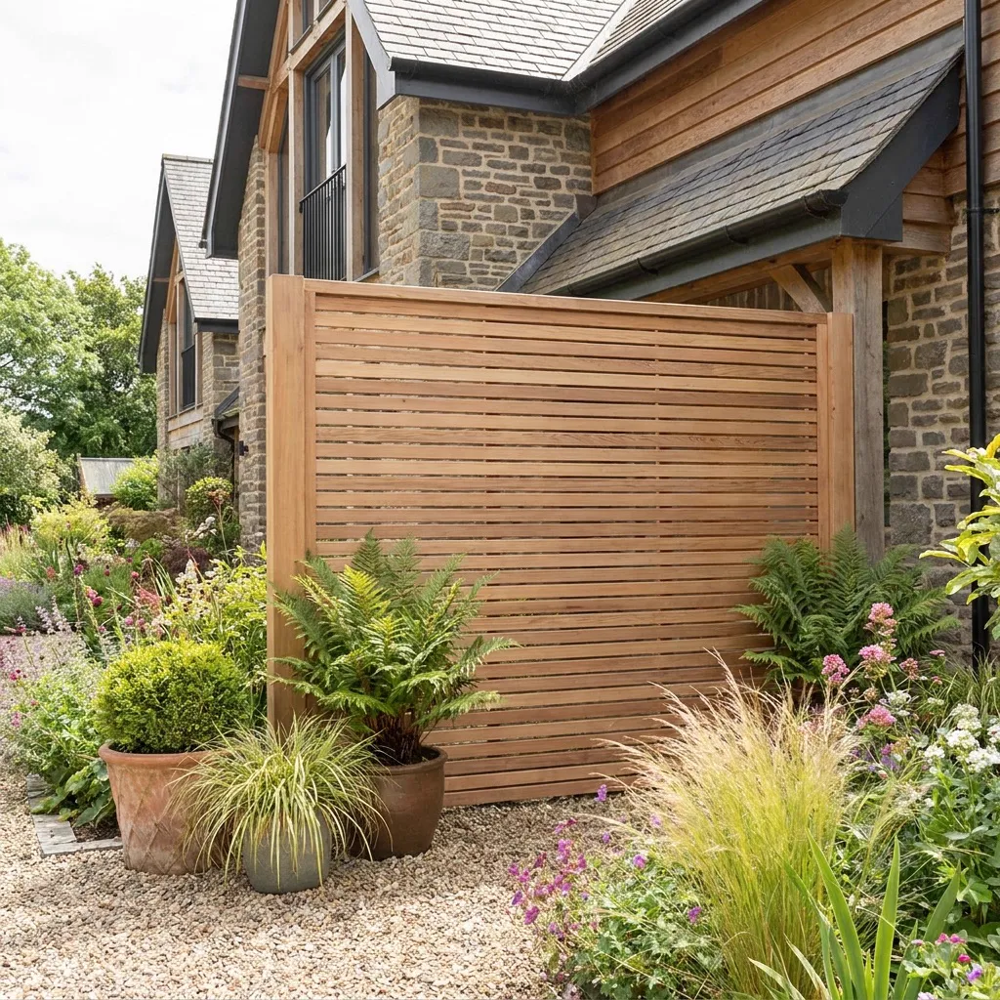
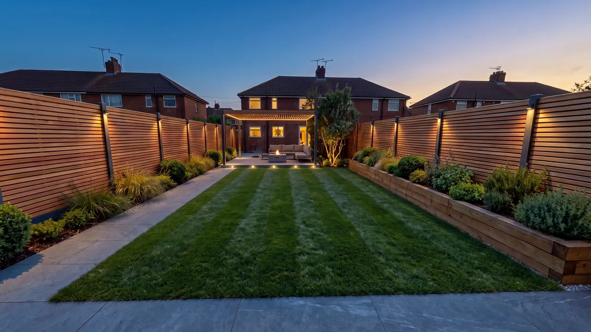

Fence styles
One garden. Four fences.
The same Wishaw back garden and the same camera, with only the fence changed. Pick a style, then drag to compare it with the old lap panels.

 ‹ ›
Old lap panelsHorizontal slatted
‹ ›
Old lap panelsHorizontal slatted
Side by side
What each style is good for.
Horizontal slatted£105–£120 per metreWarm-toned horizontal timber slats with narrow even gaps between slim posts, dead-straight and level.
- Lifespan
- 15–20 years
- Upkeep
- Stain every 2–3 years
- Time on site
- 2–3 days for 24 m
- Best for
- Modern look, lifting a plain garden
 Closeboard£68–£78 per metreVertical overlapping feather-edge boards on concrete posts with concrete gravel boards and a capping rail.
Closeboard£68–£78 per metreVertical overlapping feather-edge boards on concrete posts with concrete gravel boards and a capping rail.
- Lifespan
- 15–20 years, posts longer
- Upkeep
- Stain every 2–3 years
- Time on site
- 1–2 days for 24 m
- Best for
- Privacy and long boundaries
 Hit and miss£88–£100 per metreVertical boards fixed alternately on both sides of the rails, solid from straight on, the same from both gardens.
Hit and miss£88–£100 per metreVertical boards fixed alternately on both sides of the rails, solid from straight on, the same from both gardens.
- Lifespan
- 15–20 years
- Upkeep
- Stain every 2–3 years
- Time on site
- 2 days for 24 m
- Best for
- Exposed, windy gardens
 Composite£170–£195 per metreCharcoal-grey composite boards slotted between anthracite aluminium posts, crisp and uniform.
Composite£170–£195 per metreCharcoal-grey composite boards slotted between anthracite aluminium posts, crisp and uniform.
- Lifespan
- 20–25+ years
- Upkeep
- Wash once or twice a year
- Time on site
- 2–3 days for 24 m
- Best for
- Never painting a fence again
Other gardens
Slatted fencing, three more ways.
 Slatted boundary on a terraceHorizontal slats down both sides of a narrow garden.
Slatted boundary on a terraceHorizontal slats down both sides of a narrow garden.
Slatted screenA short run of slats used as a screen rather than a boundary.
Slatted fence after darkLow lights on the posts, wired by an electrician.Every picture on this page is an illustration of a fence style. None of them is a photograph of a First Choice Fencing job.
Next step
Get a price for your fence.
Ring with the rough length and the style you like, or build a guide price here first and bring it with you.
Build a guide price · Book a measure